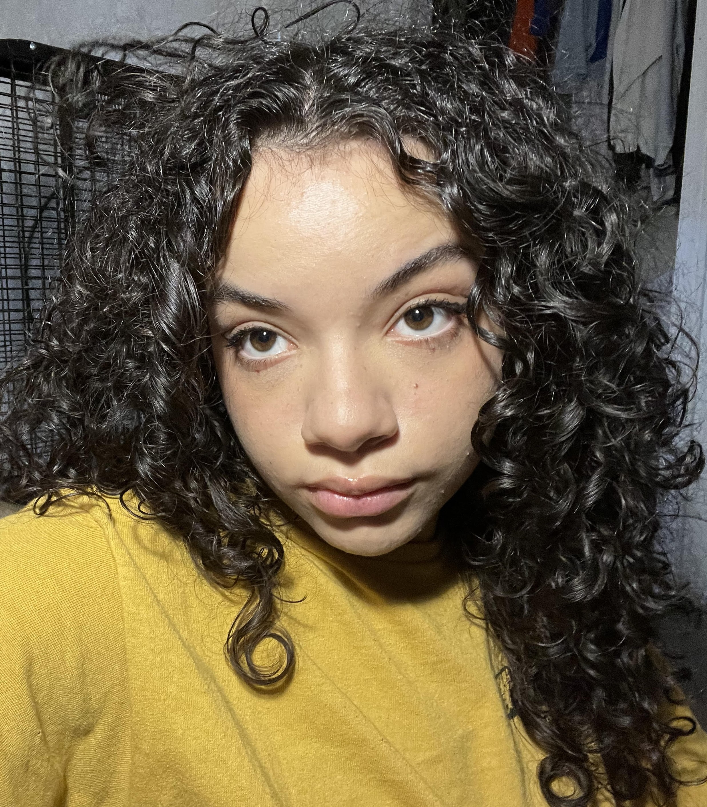
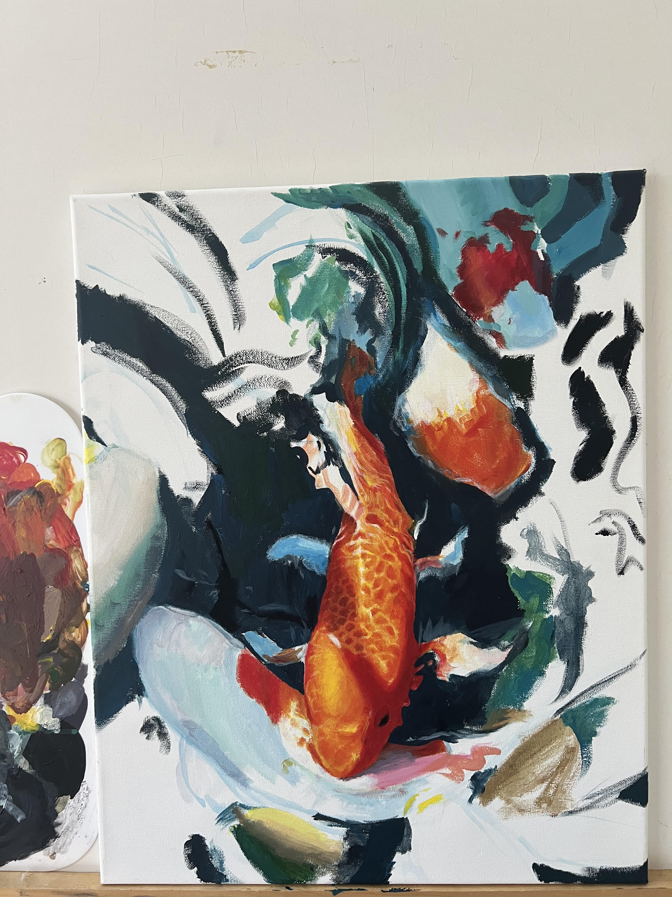
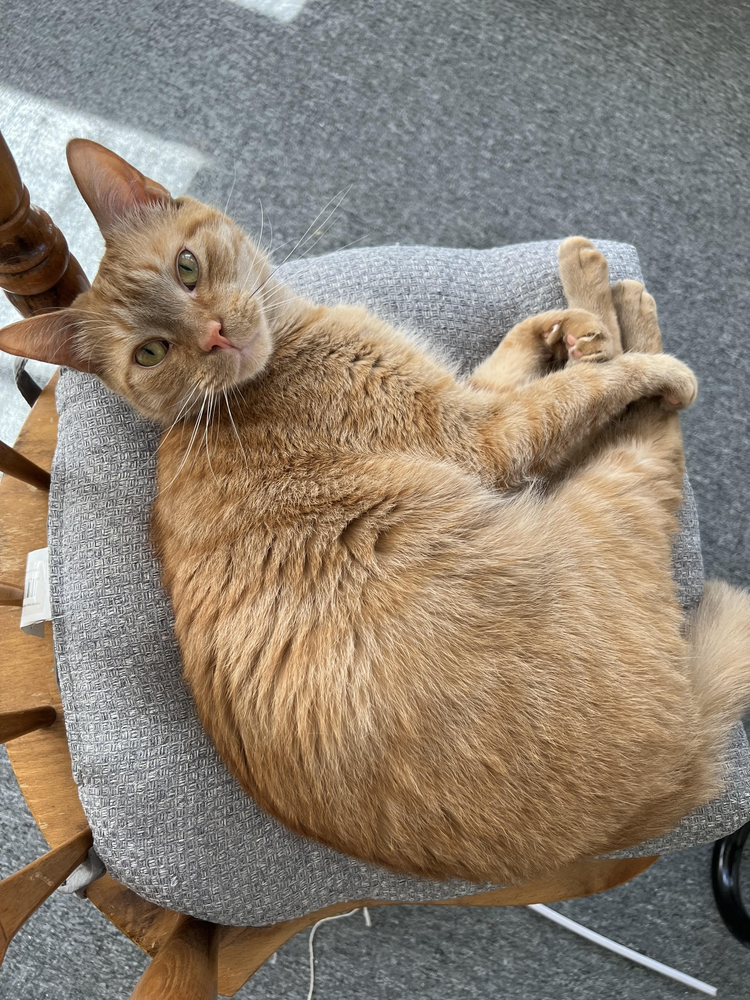

|
 |
 |
 |
About Me
My name is Jayda Silva, and I am a freshman at the University of Rhode Island. I was born and always lived in Rhode Island. I double major in Computer Science and Chinese, and am part of the Chinese Flagship program. I joined the program because I believe it can help me achieve my goals of learning a second language, and traveling.

During my free time I like to make art. I have been drawing since I was in kindergarten and have ventured into other mediums. I also like to read and listen to music. I've always wanted to create something meaningful, and was one of the reasons I decided to major in Computer Science.

I love animals, and have had many pets growing up. Whenever I return home from school I look towards seeing my cat Sai, and my ball python Luna.